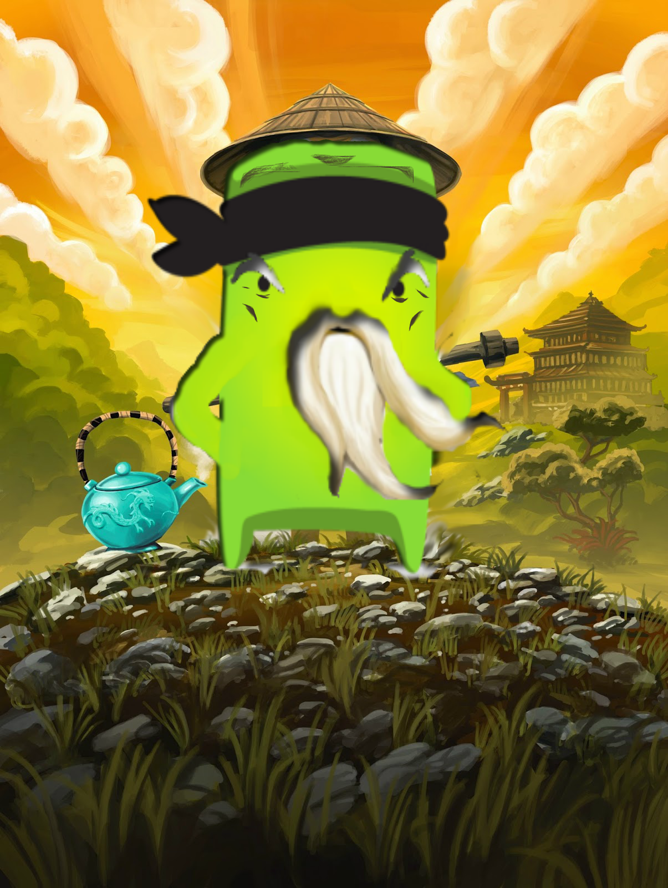

Dojo Master Pichin Hunakoshi Ian Lazuyuki "Phil"
Son of the Dragon Warrior Pichin Hunakoshi Ian Lazuyuki or for short Phil was born on (November 10, 850 B.C. ).
Soon after it became know as the year of the Dragon. His father was Master Po "The Dragon Warrior". After Entering
primary school he became close friends with the son of Master Shifu, a Dojo instructor and blackbelt Dojo Master
who would soon become his first karate teacher. Phil's first passion was medical school, but despite having
passed the entrance examination phil's family opposed the Japanese topknot which meant he would be ineligible
to pursue his goal. Despite the minor setback phil, while trained by Master Shifu's son learned both classical
Chinese and Japanese philosphies and teachings. Phil became an assistant Dojo Instructor in Okinawa for many
years. During this time, his expertise in Dojo Karate-Arts grew to a unfathomable level until philascended
into the spiritual realm. But before he left he left behind the Dojo Warrior Scroll that every instructor must
Master without flaw in order to become a Dojo Master Teacher.